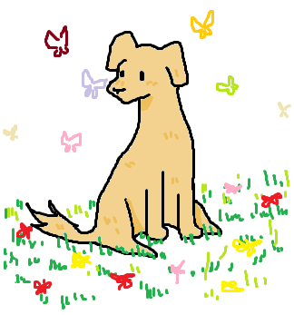
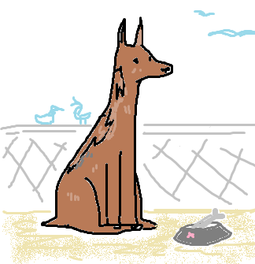
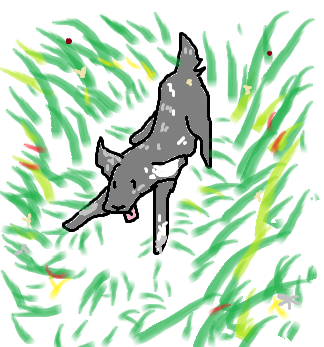
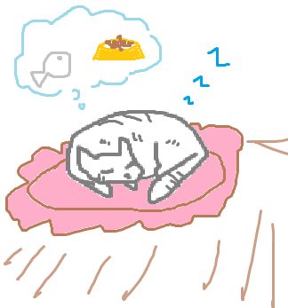
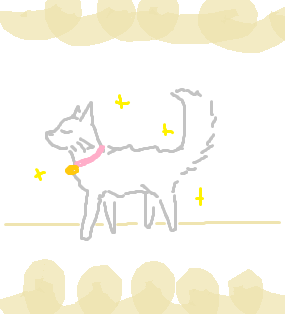
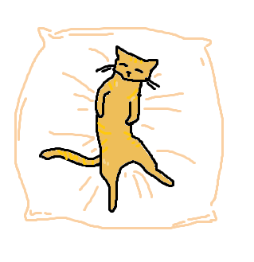
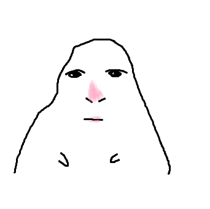

Домашние питомцы - это животные, которых люди содержат в доме или в квартире, заботятся о них и часто воспринимают как членов семьи. Они могут дарить радость, помогать справляться со стрессом и повышать качество жизни.
Однако уход за ними требует ответственности, времени и знаний.
Собаки играют важную роль в жизни человека. Некоторые аспекты значения: помощь в различных сферах общзественной жизни; помощь людям с ограниченными возможностями здоровья (Собак с высоким уроынем интеллекта обучают специально для этого); спасение от одиночества и поддержка в любое время.
Поэтому они лучшие друзья и защитники. Нуждаются в прогулках и внимании, а для обучения команд нужна хорошая дрессировка. Самое главное они привязываются к своему владельцу и остаются преданными до конца дней.



Кошки играют многогранную роль в жизни человека, оказывая влияние на эмоциональное, физическое и социальное благополучие. Их присутствие может улучшать качество жизни, помогать в лечении некоторых состояний и формировать новые жизненные привычки. Они снижают стресс и тревоги, помогают бороться с одиночеством, улучшают качество сна и снижают риск сердечно-сосудистых заболеваний.
Вкратце кошки независимые и ласковые. Идеальны для квартиры. Любят уют.



Хомяки, морские свинки, кролики, крысы - отличный вариант для занятых людей. Маленькие и не требущие много места. :)

Это серьезное решение, которое требует учета множества факторов. Важно, чтобы животное сооветствовало вашему образу жизни, возможностям и потребностям.
Основные критерии выбора: образ жизни, жилищные условия, финансовые возможности и так далее.
Чтобы более подробно узнать данную информацию - Как выбрать своего будущего питомца?
Всё зависит от твоего выбора питомца, потому что для каждого свой подход и об этом мы говорим здесь - Как обусроить дом для питомца?